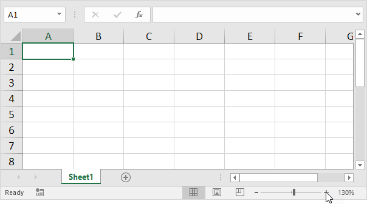

In most cases, you can use the minus and plus symbols in the status bar to quickly zoom the document. Use the buttons on the View tab to zoom to a specific percentage and to zoom to a selection.
1. To quickly zoom the document, use the minus and plus symbols in the status bar.
